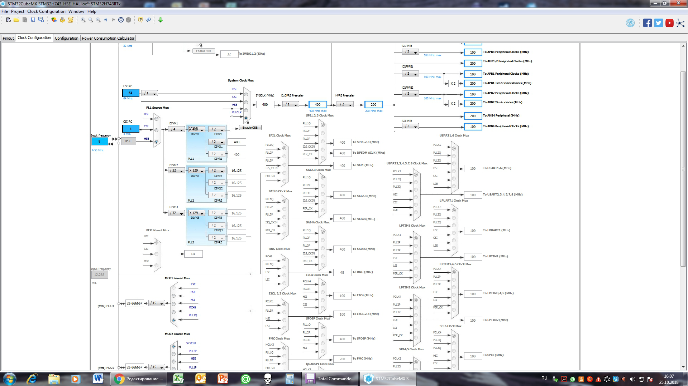
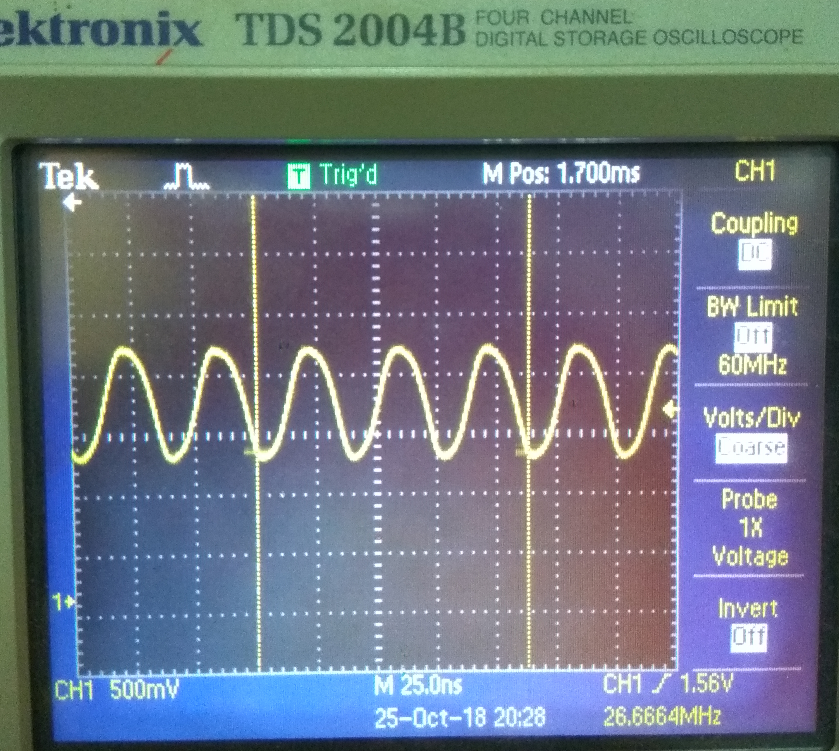

Не так давно компания STM выпустила на рынок очень мощную, по меркам микроконтроллеров, линейку кристаллов STM32H7. Что меня в ней привлекло:
Отлично подумал я, запаял на плату кристалл STM32H743IIT6 вместо STM32F746IGT6 и начал новый проект в SW4STM32.
Для расчета коэффициентов делителей и множителей системы тактирования микроконтроллера удобно пользоваться вкладкой Clock Configuration программы STM32CubeMX.
Настройки тактирования:
Соответственно, частота ядра (SYSCLK)- 400 МГц.

Кроме STM32CubeMX есть еще набор «STM32CubeH7 firmware package», который содержит большое количество примеров для работы с периферией для STM32H7. Именно из него была взята последовательность инициализации системы тактирования микроконтроллера.
Информация и комментарии взяты из следующих источников:
Итак, начнем.
1. Включение внешнего кварца и ожидание готовности.
// Enable HSE
RCC->CR |= RCC_CR_HSEON;
// Wait till HSE is ready
while((RCC->CR & RCC_CR_HSERDY) == 0);
2. Указание источника частоты для PLL1 — внешний кварц.
//RCC_OscInitStruct.PLL.PLLSource = RCC_PLLSOURCE_HSE;
RCC -> PLLCKSELR |= RCC_PLLCKSELR_PLLSRC_HSE;
3. Значение делителя устанавливается равным 4. (переделать в & по маске!!!!!)
//PLLM = 4
RCC -> PLLCKSELR &= ~RCC_PLLCKSELR_DIVM1_5; //0
RCC -> PLLCKSELR &= ~RCC_PLLCKSELR_DIVM1_4; //0
RCC -> PLLCKSELR &= ~RCC_PLLCKSELR_DIVM1_3; //0
RCC -> PLLCKSELR |= RCC_PLLCKSELR_DIVM1_2; //1
RCC -> PLLCKSELR &= ~RCC_PLLCKSELR_DIVM1_1; //0
RCC -> PLLCKSELR &= ~RCC_PLLCKSELR_DIVM1_0; //0
4. Множитель N и делители P, Q, R
//PLL1DIVR bits
//DIVN1[8:0] 0 - 8 PLLN = 400
//DIVP1[6:0] 9 - 15 PLLP = 2
//DIVQ1[6:0] 16 - 22 PLLQ = 2
//DIVR1[6:0] 24 - 30 PLLR = 2
RCC -> PLL1DIVR |= 0x0101038F;
5. Дробный делитель частоты PLL (если нужен)
// /* Configure PLL PLL1FRACN */
//__HAL_RCC_PLLFRACN_CONFIG(RCC_OscInitStruct->PLL.PLLFRACN);
RCC -> PLL1FRACR = 0;
6. Указание диапазона входной частоты PLL1
/* Select PLL1 input reference frequency range: VCI */
//__HAL_RCC_PLL_VCIRANGE(RCC_OscInitStruct->PLL.PLLRGE) ;
RCC->PLLCFGR |= RCC_PLLCFGR_PLL1RGE_3;
7. Указание диапазона выходной частоты PLL1
/* Select PLL1 output frequency range : VCO */
//__HAL_RCC_PLL_VCORANGE(RCC_OscInitStruct->PLL.PLLVCOSEL) ;
RCC->PLLCFGR &= ~RCC_PLLCFGR_PLL1VCOSEL;
8. Включение выходных делителей PLL1: P, Q, R
/* Enable PLL System Clock output. */
// __HAL_RCC_PLLCLKOUT_ENABLE(RCC_PLL1_DIVP);
//Bit 16 DIVP1EN: PLL1 DIVP divider output enable
RCC->PLLCFGR |= RCC_PLLCFGR_DIVP1EN;
/* Enable PLL1Q Clock output. */
//__HAL_RCC_PLLCLKOUT_ENABLE(RCC_PLL1_DIVQ);
RCC->PLLCFGR |= RCC_PLLCFGR_DIVQ1EN;
/* Enable PLL1R Clock output. */
// __HAL_RCC_PLLCLKOUT_ENABLE(RCC_PLL1_DIVR);
RCC->PLLCFGR |= RCC_PLLCFGR_DIVR1EN;
9. Включение дробного делителя.
/* Enable PLL1FRACN . */
//__HAL_RCC_PLLFRACN_ENABLE();
RCC->PLLCFGR |= RCC_PLLCFGR_PLL1FRACEN;
10. Пуск PLL1 и ожидание готовности (нет выхода из цикла по таймауту!!!!!)
/* Enable the main PLL. */
//__HAL_RCC_PLL_ENABLE();
RCC->CR |= RCC_CR_PLLON;
while((RCC->CR & RCC_CR_PLL1RDY) == 0);
PLL1 настроен и запущен. Теперь выбор источника частоты SYSCLK и настройка делителей шин.
11. Делитель на 2 HPRE
//RCC_ClkInitStruct.AHBCLKDivider = RCC_HCLK_DIV2;
// MODIFY_REG(RCC->D1CFGR, RCC_D1CFGR_HPRE, RCC_ClkInitStruct->AHBCLKDivider);
//HPRE[3:0]: D1 domain AHB prescaler
//1000: rcc_hclk3 = sys_d1cpre_ck / 2
RCC -> D1CFGR |= RCC_D1CFGR_HPRE_3; //1
RCC -> D1CFGR &= ~RCC_D1CFGR_HPRE_2; //0
RCC -> D1CFGR &= ~RCC_D1CFGR_HPRE_1; //0
RCC -> D1CFGR &= ~RCC_D1CFGR_HPRE_0; //0
12. Без деления D1CPRE
//RCC_ClkInitStruct.SYSCLKDivider = RCC_SYSCLK_DIV1;
//MODIFY_REG(RCC->D1CFGR, RCC_D1CFGR_D1CPRE, RCC_ClkInitStruct->SYSCLKDivider);
//D1CPRE[3:0]: D1 domain Core prescaler
//0xxx: sys_ck not divided (default after reset)
RCC -> D1CFGR &= ~RCC_D1CFGR_D1CPRE_3; //0
RCC -> D1CFGR &= ~RCC_D1CFGR_D1CPRE_2; //0
RCC -> D1CFGR &= ~RCC_D1CFGR_D1CPRE_1; //0
RCC -> D1CFGR &= ~RCC_D1CFGR_D1CPRE_0; //0
13. Задаем PLL1 как источник SYSCLK и ожидаем готовности
//RCC_ClkInitStruct.SYSCLKSource = RCC_SYSCLKSOURCE_PLLCLK;
//MODIFY_REG(RCC->CFGR, RCC_CFGR_SW, RCC_ClkInitStruct->SYSCLKSource);
//SW[2:0]: System clock switch
//011: PLL1 selected as system clock (pll1_p_ck)
RCC->CFGR &= ~RCC_CFGR_SW_2; //0
RCC->CFGR |= RCC_CFGR_SW_1; //1
RCC->CFGR |= RCC_CFGR_SW_0; //1
while((RCC->CFGR & RCC_CFGR_SWS) != RCC_CFGR_SWS_PLL1);
14. Делитель на 2 D1PPRE
//D1PCLK1 Configuration
//RCC_ClkInitStruct.APB3CLKDivider = RCC_APB3_DIV2;
//MODIFY_REG(RCC->D1CFGR, RCC_D1CFGR_D1PPRE, RCC_ClkInitStruct->APB3CLKDivider);
//Bits 6:4 D1PPRE[2:0]: D1 domain APB3 prescaler
//100: rcc_pclk3 = rcc_hclk3 / 2
RCC -> D1CFGR |= RCC_D1CFGR_D1PPRE_2;
RCC -> D1CFGR &= ~RCC_D1CFGR_D1PPRE_1;
RCC -> D1CFGR &= ~RCC_D1CFGR_D1PPRE_0;
15. Делитель на 2 D2PPRE1
//PCLK1 Configuration
//RCC_ClkInitStruct.APB1CLKDivider = RCC_APB1_DIV2;
//MODIFY_REG(RCC->D2CFGR, RCC_D2CFGR_D2PPRE1, (RCC_ClkInitStruct->APB1CLKDivider));
//Bits 6:4 D2PPRE1[2:0]: D2 domain APB1 prescaler
//100: rcc_pclk1 = rcc_hclk1 / 2
RCC -> D2CFGR |= RCC_D2CFGR_D2PPRE1_2;
RCC -> D2CFGR &= ~RCC_D2CFGR_D2PPRE1_1;
RCC -> D2CFGR &= ~RCC_D2CFGR_D2PPRE1_0;
16. Делитель на 2 D2PPRE2
//PCLK2 Configuration
//RCC_ClkInitStruct.APB2CLKDivider = RCC_APB2_DIV2;
//MODIFY_REG(RCC->D2CFGR, RCC_D2CFGR_D2PPRE2, (RCC_ClkInitStruct->APB2CLKDivider));
//Bits 10:8 D2PPRE2[2:0]: D2 domain APB2 prescaler
//100: rcc_pclk2 = rcc_hclk1 / 2
RCC -> D2CFGR |= RCC_D2CFGR_D2PPRE2_2;
RCC -> D2CFGR &= ~RCC_D2CFGR_D2PPRE2_1;
RCC -> D2CFGR &= ~RCC_D2CFGR_D2PPRE2_0;
17. Делитель на 2 D3PPRE
//D3PCLK1 Configuration
//RCC_ClkInitStruct.APB4CLKDivider = RCC_APB4_DIV2;
//MODIFY_REG(RCC->D3CFGR, RCC_D3CFGR_D3PPRE, (RCC_ClkInitStruct->APB4CLKDivider) );
//Bits 6:4 D3PPRE[2:0]: D3 domain APB4 prescaler
//100: rcc_pclk4 = rcc_hclk4 / 2
RCC -> D3CFGR |= RCC_D3CFGR_D3PPRE_2;
RCC -> D3CFGR &= ~RCC_D3CFGR_D3PPRE_1;
RCC -> D3CFGR &= ~RCC_D3CFGR_D3PPRE_0;
Для того чтобы убедиться, что конфигурирование и запуск прошли успешно используем выход микроконтроллера MCO2. На этом выходе должна быть частота 26.666 МГц при делителе выхода 15.

NordicEnergy 26 октября 2018 в 10:09
+3
Регистры это хорошо, но уже миллион первая статья, где опять настраивают RCC и мигают светодиодом. Лучше бы подняли на регистрах там usb что ли или SDRAM какую.
0
SDRAM поднят :) цветной дисплей подключен как внешняя память и обновляется по ДМА :) USB тоже можно поднять… если кому-то нужно… :)
+4
Так и пишите про SDRAM, а не статью где очевидную, хорошо описанную в RM операцию, пытаются реализовать и в итоге через жопу коряво. Ваш вариант действительно хуже реализации на HAL. Вообще нужно сильно постараться, чтобы сделать менее стабильно, чем в родном HAL-е.
–4
В Reference Manual детально описана инициализация PLL, а вот переключение SysClk на тактирование от PLL нет так явно. :) Пришлось потратить некоторое время на исследование HAL и формирование нужной последовательности.
sanders1967 26 октября 2018 в 10:25
0
Настройка FMC контроллера — одна строчка :) если интересно могу выложить :)
+4
Ох, фантазер… как минимум расшарить в линковщике адресное пространство это 2 строки. А вообще ждем-с статью, где в 1 строчку SDRAM запускается.
В RM есть наскальный рисунок системы тактирования, где для самых «талантливых» около каждого делителя написали конкретный регистр для его настройки, а также около каждого мультиплексора тоже указали регистр. Ужасно не очевидно. А еще, чтобы разработчик совсем ничего не понял у ST десятки страниц в RMе + аппноуты, где расписан каждый чих, включая порядок настройки и включения, на систему тактирования.
0 Согласен :) не одна.
void init_FMC(void)
{
RCC->AHB3ENR |= RCC_AHB3ENR_FMCEN;
FMC_Bank1->BTCR[0] = 0x000010D9; //for 168 MHz
FMC_Bank1->BTCR[1] = 0x000300F;
}
Инициализация FMC для F7
novarc 26 октября 2018 в 08:48
+1
Зря вы так. Не факт что Ваш код лучше чем HAL.
Вот например в 10. «Пуск PLL1 и ожидание готовности» нет выхода из цикла по таймауту.
А в HAL есть обработчики таких ситуаций.
–4
Вы правы. Сделано намеренно, поскольку если будет проблема, то проц не выйдет из цикла и плата не запустится. А запуск устройства с другими параметрами тактирования не нужен.
+4 Не фантазируйте. То, что вы не умете писать код и не удосужились написать обработчик ошибки — это банальный быдло-код. HAL конечно мусор, но там все события обработаны. Вы и так можете не запускать устройство, но отправить информацию об ошибки, например, по UART или в отладчик или написать сценарий на случай возникновения ошибки. У RCC есть так же защищенный режим работы, на хабре о нем отдельная статья была.
Dima_Sharihin 26 октября 2018 в 14:36
+3
//PLLM = 4
RCC -> PLLCKSELR &= ~RCC_PLLCKSELR_DIVM1_5; //0
RCC -> PLLCKSELR &= ~RCC_PLLCKSELR_DIVM1_4; //0
RCC -> PLLCKSELR &= ~RCC_PLLCKSELR_DIVM1_3; //0
RCC -> PLLCKSELR |= RCC_PLLCKSELR_DIVM1_2; //1
RCC -> PLLCKSELR &= ~RCC_PLLCKSELR_DIVM1_1; //0
RCC -> PLLCKSELR &= ~RCC_PLLCKSELR_DIVM1_0; //0
просто финиш. Вы смотрели на объявления этих регистров? Все, как один — volatile? Во что компилятор должен будет превратить всю эту простыню быдлокода? На каждую строку Сишного кода у вас должно быть:
В то время, как это значение у вас известно на этапе компиляции и не меняется в рантайме. Достаточно было
Да, часто нужно выполнять операции над регистрами в определенной последовательности, но конкретно здесь это точно не нужно. Простота кода? Но зачем вы тогда спускались до уровня регистров?
–3
Значения делителей и множителей PLL необходимо устанавливать до запуска. После запуска поменять нельзя, нужно будет останавливать. Поэтому определенный порядок должен быть. Также и с выбором источника SysClk.
+2
Нет, я не про это говорю, я про то, что вы в одном блоке кода 6 раз подряд модифицируете делитель частоты, зачем?
–3
А в чем проблема? код нечитабелен? :) проблема с производительностью? биты определены в хедере… :)
+2 1) Читабельность? Ее тут нет
2) Вам вроде на пальцах объяснили, даже цирковые медведи бы поняли. Вы вместо разовой модификации значения регистра сделали это в 6 этапов, то есть производительность конкретного куска кода в 6 раз ниже.
P.S. идите на HAL, не в обиду, но дно должно жить на дне.